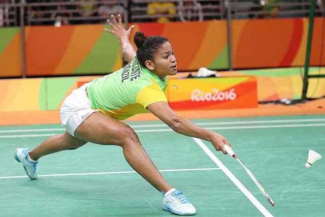
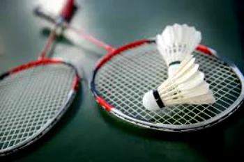
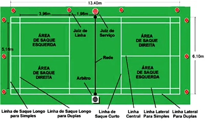

O badminton foi criado no século XIX, na Inglaterra, inspirado num jogo que era praticado na Índia chamado de Poona. No entanto,esporte semelhante já era praticado na Grécia Antiga:Tamborete e Peteca. O nome está relacionado com a Badminton House,local que supostamente foi jogado pela primeira vez, de propriedade do Duque de Beaufort's. Badminton é um esporte dinâmico praticado entre dois ou quatro jogadores. Ainda que seja semelhante ao tênis, que usa raquetes, está dividido por uma rede com suas peculiaridades. Ao invés de uma bola, é jogado com uma espécie de peteca, chamada de volante ou birdie. Ao contrário do que se possa imaginar, ela atinge velocidadesuperior a de uma bola de tênis, podendo chegar até 300 km/h. Essa modalidade exige um grande treinamento físico por parte dos atletas e envolve agilidade, coordenação e reflexo. Ela é praticada por homens, mulheres e crianças, sendo considerado o esporte de raquete mais rápido do mundo.
O badminton foi criado no século XIX na Inglaterra, inspirado num jogo que era praticado na Índia chamado de Poona. No entanto, um jogo semelhante já era praticado na Grécia Antiga: tamborete e peteca. O nome desse esporte está relacionado com a Badminton House, local onde, supostamente, foi jogado pela primeira vez. A Badminton House era propriedade do Duque de Beaufort's.Sua popularidade foi crescendo com o passar do tempo. Da Inglaterra ele foi levado para outros países da Europa, Ásia e América. Entretanto, no Brasil, o Badminton ainda não é um jogo muito popular, embora essa modalidade venha crescendo a cada ano.Sua consolidação se deu com a fundação da "Federação Internacional de Badminton", em 1934. Atualmente o nome desse órgão é Federação Mundial de Badminton (BWF) e sua sede está localizada na cidade de Gloucestershire, na Inglaterra. Essa entidade é responsável por organizar eventos desse esporte, com destaque para o "Campeonato Mundial de Badminton".Hoje, mais de 130 países são membros da Federação. Alguns países que dominam esse esporte são: China, Indonésia, Coreia e Malásia, todos no continente asiático.Somente no início da década de 90 que o badminton foi incluso nas modalidades olímpicas. Sua estreia aconteceu nas Olimpíadas de Barcelona em 1992. No Brasil, a primeira partida oficial de Badminton foi realizada em São Paulo no início da década de 80. Em 1993 foi criada a "Confederação Brasileira de Badminton", responsável por organizar eventos desse esporte no Brasil. Sem dúvida, esse momento foi crucial para o aumento da prática do badminton no território nacional.
O badminton está baseado em movimentos de saque e defesa. A quadra de badminton é dividida por uma rede que está cerca de 1,55 metros do solo. Uma partida de badminton possui três sets de 21 pontos cada. Vence o jogo quem fizer dois sets primeiro. Jogado com raquete e peteca, ganha ponto quem deixar a peteca tocar no espaço adversário. Portanto, o importante é não deixar a peteca tocar no chão. Geralmente a peteca é feita com penas de ganso e pesa entre pesando entre 4 a 5 gramas. Entretanto, ela pode ser feita de nylon. Já a raquete de Badminton pesa cerca de 100 gramas. Ainda que sejam leves, elas são feitas de material muito resistente.
O badminton pode ser jogado numa quadra fechada ou mesmo num campo. Em ambos os casos, o local de prática é retangular sendo suas medidas aproximadamente 13 metros de comprimento por 6 de largura. Note que as dimensões da quadra variam de acordo com o número de jogadores. 